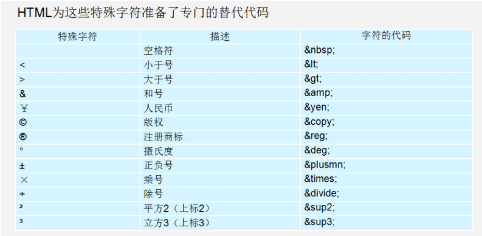
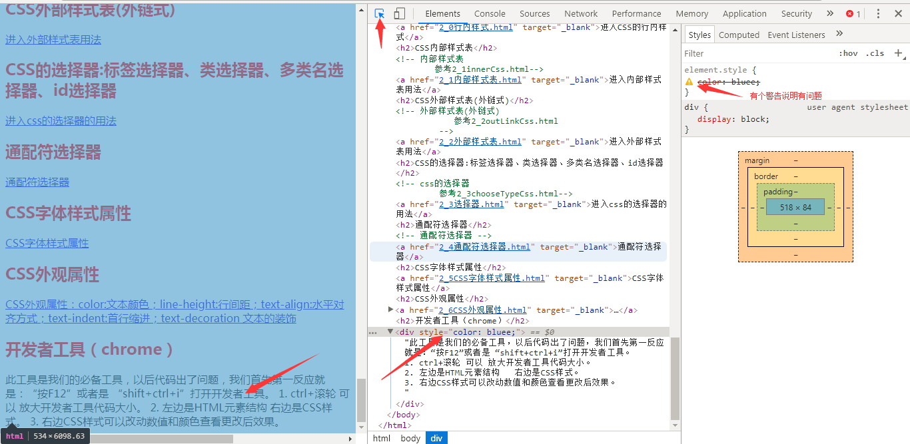
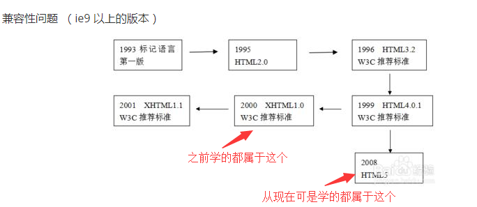

我是页面内标题h1
我是页面内标题h2
我是页面内标题h3
我是页面内标题h4
我是页面内标题h5
我是页面内标题h6
段落标签p(paragraph)
中共中央政治局常委、国务院总理、中央网络安全和信息化委员会副主任李克强主持会议。中共中央政治局常委、全国人大常委会委员长栗战书，中共中央政治局常委、全国政协主席汪洋，中共中央政治局常委、中央纪委书记赵乐际，中共中央政治局常委、国务院副总理韩正出席会议。中共中央政治局常委、中央书记处书记、中央网络安全和信息化委员会副主任王沪宁作总结讲话。
美国对中兴的最严厉处罚，引发了西安电子科技大学苗启广教授一次相当早期的回忆。22年前，也即1996年7月，包括美国、日本、德国、法国、英国、加拿大、澳大利亚等在内的33个国家在奥地利维也纳签署了《瓦森纳协定》（简称“瓦协”WassenaarArrangement，又称“瓦森纳安排机制”）。这份协定规定，成员国自行决定是否发放敏感产品和技术的出口许可证，并决定从1996年11月1日起实施新的控制清单和信息交换规则。这份安排机制包含两份控制清单：一份是军民两用商品和技术清单，涵盖了先进材料、材料处理、电子器计算机、电信与信息安全、传感与激光、导航与航空电子仪器、船舶与海事设备、推进系统等9大类；另一份则是军品清单，涵盖了各类武器弹药、设备及作战平台等共22类。彼时中国就在被禁运国家之列。
水平线标签hr(horizontal rule)，单标签
换行标签br(break),是单标签
这里就用到了换行标签br,你看换行了。
朦胧中阴风四合，赤龙扑上她身，她迷糊了。醒来时身上还留下腥臭的涎水沫子，身旁留下一张沾满涎水沫的画儿，上面画着一个红色的人像，脸形上锐下丰满，八采眉，长头发，上书：亦受天佑。她将这图画藏了起来，从此以后，庆都就怀孕了。她住在丹陵(今顺平县伊祁山)，过了十四个月，生下一个儿子。庆都拿出赤龙留下的图文一看，儿子生得和图上画的人一模一样。帝喾闻报庆都为他生了儿子，本该高兴，岂料他的母亲恰在这个儿子降生的时候去世了。帝喾是个孝子，为母亲的去世哭得成了泪人儿，哪里还会有高兴的心情呢。他为母亲一连服孝三年，也顾不下庆都和儿子的事。庆都带着儿子住在娘家，直把儿子抚养到十岁，才让他回到父亲的身边。这个孩子就是后来的帝尧。所以帝尧小时先随外祖父家的姓为伊祁(耆)氏，后又称陶唐氏。
div,span标签
我是第1个div，我自己占一行
我是第2个div，我自己占一行
我是第1个span，我不能自己独占一行
我是第2个span，我不能自己独占一行
b,strong加粗；i,em斜体；s,del删除线；u,ins下划线
粗体：通过b标签实现粗体 --- 通过strong标签实现粗体
斜体：通过i标签实现斜体 --- 通过em标签实现斜体
删除线：通过s标签加删除线 ---
通过del标签加删除线
下划线：通过u标签加下划线 ---
通过ins标签加下划线
图片标签img

链接标签a
文本、图像、表格、音频、视频等的超链接
锚点
锚点定位:通过创建锚点链接，用户能够快速定位到当前网页的目标位置。
base 标签：参考1_1base.html
base 标签：前往1_1base.html
特殊字符

路径：相对路径，绝对路径，简单
无序列表
- 无序列表有前面的圆点1
- 无序列表有前面的圆点2
- 无序列表有前面的圆点3
无序列表--去掉前面的圆点
- 无序列表有前面的圆点1
- 无序列表有前面的圆点2
- 无序列表有前面的圆点3
有序列表
- 列表项1
- 列表项2
- 列表项3
自定义列表
- 名词1
- 名词1解释1
- 名词1解释2
- 名词2
- 名词2解释1
- 名词2解释2
表格table
人员名单
| 姓名 |
年龄 |
性别 |
| 张三 |
23 |
女 |
| 李四 |
34 |
男 |
| 王五 |
43 |
女 |
| 姓名 |
年龄 |
性别 |
| 张三 |
23 |
女 |
| 李四 |
34 |
男 |
| 王五 |
43 |
女 |
人员名单
| 姓名 |
年龄 |
性别 |
| 张三 |
23 |
| 34 |
男 |
| 王五 |
43 |
女 |
表单form
开发者工具（chrome）
此工具是我们的必备工具，以后代码出了问题，我们首先第一反应就是：“按F12”或者是 “shift+ctrl+i”打开开发者工具。
1. ctrl+滚轮 可以 放大开发者工具代码大小。
2. 左边是HTML元素结构 右边是CSS样式。
3. 右边CSS样式可以改动数值和颜色查看更改后效果。
4. 右边的CSS样式被线划掉有两种情况：1是有错误但是也有感叹号；2是样式被层叠了，但是权重不够。
5. 有个插件可以在调试工具内改了代码后直接也修改源代码。

CSS背景--background-color、background-image、background-repeat、background-position(背景图默认从盒子的左上角开始，无论背景图比盒子大还是小)、background-attachment
Backgrond图片
CSS背景--简写
Backgrond简写
CSS背景--半透明
9Backgrond半透明
CSS盒子模型--盒子浮动(float)
盒子浮动(float)
CSS盒子模型--清除float(后造成的影响)
元素浮动起来后不在占用父元素的位置，所以它会对后面的元素排版产生影响，因此我们就要清除这种影响，所以说这里不叫清除浮动，而是叫做清除浮动后产生的影响
浮动的影响举例
清除浮动--额外标签法
在最后一个浮动标签的后，新添加一个标签用来清除浮动，可见这种方式使用了多余的标签，对于代码的已读性结构性都不好，因此虽然是w3c推荐的方法，但是我们并不采用这种方式
额外标签法
清除浮动--overflow清除浮动
overflow清除浮动
清除浮动--after伪元素清除浮动
after伪元素清除浮动
清除浮动--before和after双伪元素清除浮动
before和after双伪元素清除浮动
定位--定位总览
定位总览
定位--静态定位(static)
静态定位(static),就不介绍了，简单
定位--相对定位relative
相对定位relative
定位--绝对定位absolute
绝对定位absolute-祖辈无定位，以当前浏览器窗口为基准偏移(无祖辈验证浏览器窗口可滚动的情况)
绝对定位absolute-祖辈无定位，以当前浏览器窗口为基准偏移(有无定位的祖辈，还是以浏览器窗口为基准偏移)
绝对定位absolute-祖辈有定位，以最近的有定位的祖辈为基准偏移
案例--子绝父相
子绝父相案例
定位的盒子实现居中
定位的盒子实现居中
定位--固定定位
固定定位
案例--固定定位案例
固定定位案例
定位--绝对定位和固定定位模式转换
绝对定位和固定定位模式转换
定位--z-index叠放次序
相对定位、绝对定位、固定定位的z-index叠放次序
定位--float、定位、z-index、层级的案例
一个涵盖了float、定位、z-index、层级的案例
标签的显示和隐藏--display实现
display实现标签的显示和隐藏
display实现标签的显示和隐藏案例
标签的显示和隐藏--visibility实现
visibility实现标签的显示和隐藏
标签的显示和隐藏--overflow溢出部分显示和隐藏的处理
overflow实现溢出部分的显示和隐藏
鼠标样式cursor
鼠标样式cursor
轮廓outline
取消某些控件的轮廓线和禁止textarea拖动
vertical-align对齐
一行中文字和图片的对齐方式，去掉图片底部的默认空白间隙
溢出的文字隐藏
溢出的文字隐藏white-space和text-overflow的用法
精灵图sprite的使用
前提：背景图的特点是，一个标签用一张很大的背景图，只能显示背景图的局部，且可以通过background-position调整位置，以确定显示背景图的哪个部分。
精灵图其实很简单，就是一张大图上面有各种小图，然后各个标签重复利用这张大图作为背景(必须是背景)，然后通过background-position移动该大图的位置以确定该大图的显示区域，把需要的小图那部分显示出来即可。就好像这个背景图这有这个小图一样。
精灵国的最主要目的是减少服务器的请求次数
精灵图sprite的使用
精灵图案例用字母拼出名字
手机端精灵图，因为手机端UI给的图片一般都是原图的2倍尺寸，所有手机端精灵图也是原图的2倍尺寸，因此，手机端开发使用精灵图要使用adobe
fireworks的cutterman等工具缩小到原大小再在程序中使用，这个没有连接，看看就行了
滑动门效果背景图
其实很简单，利用了两个相同的图形，作为背景重叠后效果没有违和感的特点，然后也用到了background-position调整背景图位置。
滑动门效果背景图
字体图标
字体图标
京东项目
CSS Reset类库--normalize.css
ico图标
搜索引擎优化--logo处理
搜索引擎优化--三大标签title(h1~h6)、description、Keywords
很多标签如表单标签等都有内边距和边框等，容易在开发时引发布局问题
长度可以用百分比和auto表示,可设置最大宽最大高
圆角图片
CSS W3C 统一验证工具
验证css是否有错误等
网站相关--一个有用的网站
站长之家：里面有各种工具，多到你无法想象
CSS代码压缩
CSS代码压缩
HTML5新标签与特性--html简史
IE9以上才支持H5新标签

HTML5新标签与特性--新标签
H5常用新标签
HTML5新标签与特性--表单中新增input类型
H5新增input类型
HTML5新标签与特性--表单中新增input属性
H5新增input属性
HTML5新标签与特性--input新增类型和属性综合案例
input新增类型和属性综合案例
HTML5新标签与特性--多媒体标签
多媒体iframe--这个不是h5的，是老版的
多媒体embed
多媒体audio--音频
多媒体video--视频
CSS3--结构(位置)伪类选择器
结构(位置)伪类选择器
CSS3--一类属性选择器
属性属于某一类的选择器
CSS3--伪元素选择器
first-letter、first-line、selection
after和before伪元素
通过after使用字体图标
CSS3--盒子模型
盒子模型对比老板css盒子模型
CSS3盒子模型、定位、伪元素选择器、伪类选择器综合案例、溢出隐藏
CSS3--过度transition
过度transition
过度transition案例
CSS3--2D变形transform
移动translate
移动translate结合定位实现居中
缩放scale
旋转rotate
斜切
综合使用移动缩放旋转斜切等
扒站工具
扒站工具
CSS3--动画
animation动画的from to实现
animation动画的百分比实现
CSS3--伸缩布局flex
伸缩布局flex，类似Android的LinearLayout的权重
伸缩布局flex，某个子标签固定宽度，则剩余子标签参与份额分配
伸缩布局flex，垂直方向，以及子元素顺序反转
CSS3--文字阴影
文字阴影
CSS3--背景
背景缩放
背景渐变
一个背景有多个背景图片
CSS3--3D变形transform
旋转-绕X轴旋转rotateX
旋转-绕Y轴旋转rotateY
旋转-绕Z轴旋转rotateZ，其实就是之前的2D旋转
perspective:透视，远景，模拟人眼看到真实事物的立体效果，例如近大远小，角度变形等
3D移动,包换2D的translateX和translateY，这俩不讲了；只讲translateZ和translate3d
综合使用XYZ轴等--transform:rotateX(45deg) rotateY(180deg) rotateZ(90deg) skew(0,10deg)
translateX() translateY translateZ translate3d;，这个没有链接，知道就行了
CSS3--backface-visibility
backface-visibility:当元素不面向屏幕时是否可见
浏览器前缀
浏览器前缀
高低版本浏览器解决方案
优雅降级和渐进增强
BFC(Block formatting context)
BFC(块级格式化上下文)
标签截图
谷歌浏览器支持根据标签截图：F12 --> Elements --> 鼠标选中某个元素 --> Ctrl+shift+p --> Capture node screenshot(或者在顶部输入栏输入关键字)